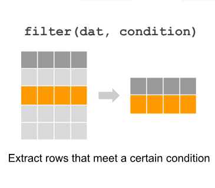
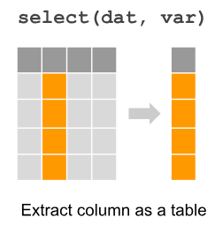
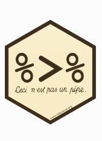
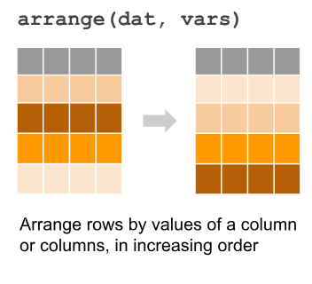
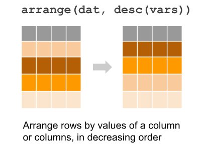
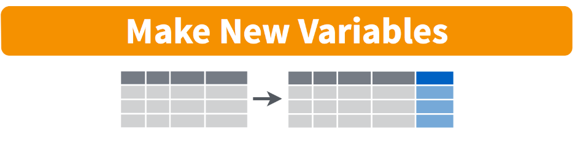
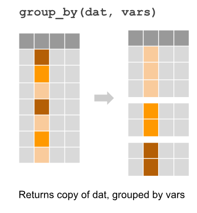
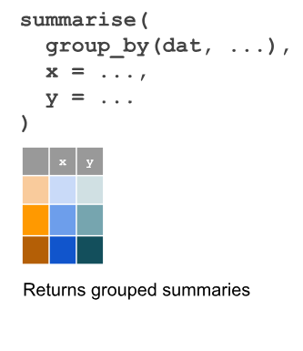

[1] 5[1] 5#R is case sensitive so X is not the same as x.
#Output will be object 'A' not found
# Print(A)
# character strings
myname <- "Bea"
myname[1] "Bea"[1] TRUEBachelor and Master Degree in applied statistics
Working at Intel as a Data Scientist for the past 8 years
R fakebook group admin – ” להמונים R”
Organizing R meetups
Contact : tom.haber@intel.com
Basic R : Learn first steps with R
Data Manipulation Using ‘dplyr’ package (Maybe)
log> log(exp(3))
[1] 3
log> log10(1e7) # = 7
[1] 7
log> x <- 10^-(1+2*1:9)
log> cbind(deparse.level=2, # to get nice column names
log+ x, log(1+x), log1p(x), exp(x)-1, expm1(x))
x log(1 + x) log1p(x) exp(x) - 1 expm1(x)
[1,] 1e-03 9.995003e-04 9.995003e-04 1.000500e-03 1.000500e-03
[2,] 1e-05 9.999950e-06 9.999950e-06 1.000005e-05 1.000005e-05
[3,] 1e-07 1.000000e-07 1.000000e-07 1.000000e-07 1.000000e-07
[4,] 1e-09 1.000000e-09 1.000000e-09 1.000000e-09 1.000000e-09
[5,] 1e-11 1.000000e-11 1.000000e-11 1.000000e-11 1.000000e-11
[6,] 1e-13 9.992007e-14 1.000000e-13 9.992007e-14 1.000000e-13
[7,] 1e-15 1.110223e-15 1.000000e-15 1.110223e-15 1.000000e-15
[8,] 1e-17 0.000000e+00 1.000000e-17 0.000000e+00 1.000000e-17
[9,] 1e-19 0.000000e+00 1.000000e-19 0.000000e+00 1.000000e-19[1] 4.0 5.0 23.8 67.0[1] 14 35[1] 4.0 5.0 23.8 67.0 14.0 35.0[1] "numeric"[1] "yes" "no" [1] "character"[1] FALSE FALSE TRUE FALSE[1] "logical"[1] "3" "5" "yes" [1] 1 2 3 4 5 6 7 8 9 10 [1] 1 2 3 4 5 6 7 8 9 10[1] 7 6 5 4 3[1] 2 2 2[1] TRUE TRUE TRUE TRUE TRUE [1] 1 2 3 4 1 2 3 4 1 2 3 4 [1] 1 1 1 2 2 2 3 3 3 4 4 4# vector arithmetics -The operations are performed element by element.
v1 <- c(3, 6, 2)
v2 <- c(1, 5, 3)
v1 + v2[1] 4 11 5[1] 3 30 6#Vectors in the same expression need not all be of the same length. Shorter vectors
#are recycled until they match the length of the longest vector
v1 + 7[1] 10 13 9[1] 1.732051 2.449490 1.414214[1] 4.0 5.0 23.8 67.0 14.0 35.0[1] 148.8[1] 15627080[1] 67[1] 4[1] 6[1] 4.0 5.0 14.0 23.8 35.0 67.0[1] 24.8[1] TRUE FALSE TRUE TRUE FALSE FALSE TRUE[1] TRUE TRUE TRUE TRUE FALSE FALSE TRUE[1] FALSE TRUE FALSE FALSE TRUE TRUE TRUE[1] TRUE TRUE FALSE FALSE TRUE TRUE TRUE[1] FALSE FALSE FALSE TRUE FALSE FALSE FALSE[1] TRUE TRUE TRUE FALSE TRUE TRUE TRUE[1] TRUE[1] FALSE[1] TRUE[1] 4[1] 3 4[1] 3 5 1 2 7 6 4[1] TRUE TRUE FALSE FALSE FALSE TRUE TRUE[1] FALSE FALSE TRUE FALSE TRUE TRUE FALSE[1] TRUE FALSE TRUE TRUE FALSE FALSE FALSE[1] TRUE [1] FALSE FALSE FALSE FALSE FALSE FALSE FALSE FALSE FALSE FALSE TRUE [1] NA NA NA 7 6 5 4 3 2 3 NA[1] NA[1] 4.285714#By default, the function matrix flls in the matrix column by column. Set the
#argument byrow = TRUE to fll in the matrix row by row.
b <- matrix(10:15, nrow = 2, ncol = 3, byrow = TRUE)
b [,1] [,2] [,3]
[1,] 10 11 12
[2,] 13 14 15[1] 2 3 x y
[1,] 1 7
[2,] 2 8
[3,] 3 9 [,1] [,2] [,3]
x 1 2 3
y 7 8 9 [,1] [,2] [,3]
[1,] 20 23 26
[2,] 24 27 30 [,1] [,2] [,3]
[1,] 100 132 168
[2,] 143 182 225 x y
x 14 50
y 50 194#All elements of a matrix have the same type. Look at what happens when we
#bind vectors of di???erent types:
name <- c("Mike", "Jane", "Peter")
age <- c(42, 34, 31)
dat <- cbind(name, age)
dat name age
[1,] "Mike" "42"
[2,] "Jane" "34"
[3,] "Peter" "31"[1] "character" name age
1 Mike 42
2 Jane 34
3 Peter 31[1] "data.frame"'data.frame': 3 obs. of 2 variables:
$ name: chr "Mike" "Jane" "Peter"
$ age : num 42 34 31 name age
1 Mike 42
2 Jane 34
3 Peter 31[1] 2[1] 3# from a matrix - The rows are referred to by the fןrst (left-hand)
#subscript and the columns by the second (right-hand)
a <- matrix(10:15, nrow = 2, ncol = 3)
a [,1] [,2] [,3]
[1,] 10 12 14
[2,] 11 13 15[1] 15[1] 11 13 15[1] 14 15# data.frame
name <- c("Mike", "Jane", "Peter")
age <- c(42, 34, 31)
dat <- data.frame(name, age)
dat name age
1 Mike 42
2 Jane 34
3 Peter 31[1] 34[1] "Mike" "Jane" "Peter"[1] "name" "age" [1] 42 34 31[1] "Mike" "Jane" "Peter"[1] 42 34 31[1] 42 34 31[1] 42 34 31 speed dist
1 4 2
2 4 10 speed dist
39 20 32
40 20 48
41 20 52#A list is a collection of objects
mylist <- list(s1, dat, fblood) # vector, data.frame and factor
mylist[[1]]
[1] 1.00 2.75 4.50 6.25 8.00
[[2]]
name age
1 Mike 42
2 Jane 34
3 Peter 31
[[3]]
[1] AB A A B A 0 B B AB
Levels: 0 A AB B[1] "list"# we can give names for each element in the list
mylist <- list(sequence = s1, people = dat, bloodtype = fblood)
names(mylist)[1] "sequence" "people" "bloodtype"[1] AB A A B A 0 B B AB
Levels: 0 A AB B[1] AB A A B A 0 B B AB
Levels: 0 A AB BList of 3
$ sequence : num [1:5] 1 2.75 4.5 6.25 8
$ people :'data.frame': 3 obs. of 2 variables:
..$ name: chr [1:3] "Mike" "Jane" "Peter"
..$ age : num [1:3] 42 34 31
$ bloodtype: Factor w/ 4 levels "0","A","AB","B": 3 2 2 4 2 1 4 4 3# setting working directory to extract data from
setwd("C:/Users/tomhaber/OneDrive - Intel Corporation/Desktop/Current Work Animation Studio/Presentation/Intel R course/Upload Data Basic R")
# loading txt
carbon_txt <- read.table("carbon.txt",sep="\t",header = TRUE)
names(carbon_txt)[1:5][1] "Time..h." "Mannitol" "Inositol" "Sorbitol" "Rhamnose"[1] 20 7# loading csv
titanic_csv <- read.csv("titanic.csv",header = TRUE)
names(titanic_csv)[1:5] # first 5 columns names [1] "PassengerId" "Survived" "Pclass" "Name" "Sex" [1] 891 12# loading xlsx
#install.packages("readxl")
library(readxl)
titanic_xlsx <- read_xlsx("titanic.xlsx",sheet = 1)
names(titanic_xlsx)[1:5][1] "PassengerId" "Survived" "Pclass" "Name" "Sex" [1] 714 12# setting working directory to extract data from
setwd("C:/Users/tomhaber/OneDrive - Intel Corporation/Desktop/Current Work Animation Studio/Presentation/Intel R course/Upload Data Basic R")
# loading spss
#install.packages("Hmisc")
library(Hmisc)
survey_spss <- spss.get("survey.sav", use.value.labels=TRUE)
names(survey_spss)[1:5][1] "id" "sex" "age" "marital" "child" [1] 439 134# loading stata
#install.packages("foreign")
library(foreign)
auto_dta <- read.dta("auto.dta")
names(auto_dta)[1:5][1] "make" "price" "mpg" "rep78" "headroom"[1] 74 12 [,1] [,2] [,3]
[1,] NA NA 7
[2,] NA NA 8
[3,] NA NA 9 #Q2
list.2 <- list(vec1 = c("hi", "ho", "merry", "christmas"), vec2 = 4:19, mat1 = matrix(as.character(100:81), nrow = 4))
list.2$vec1
[1] "hi" "ho" "merry" "christmas"
$vec2
[1] 4 5 6 7 8 9 10 11 12 13 14 15 16 17 18 19
$mat1
[,1] [,2] [,3] [,4] [,5]
[1,] "100" "96" "92" "88" "84"
[2,] "99" "95" "91" "87" "83"
[3,] "98" "94" "90" "86" "82"
[4,] "97" "93" "89" "85" "81" mpg cyl disp
Mazda RX4 21.0 6 160
Mazda RX4 Wag 21.0 6 160
Datsun 710 22.8 4 108
Hornet 4 Drive 21.4 6 258
Hornet Sportabout 18.7 8 360
Valiant 18.1 6 225 mpg cyl disp hp drat wt qsec vs am gear carb cyl_above_5
Mazda RX4 21.0 6 160 110 3.90 2.620 16.46 0 1 4 4 TRUE
Mazda RX4 Wag 21.0 6 160 110 3.90 2.875 17.02 0 1 4 4 TRUE
Datsun 710 22.8 4 108 93 3.85 2.320 18.61 1 1 4 1 FALSE mpg cyl disp hp drat wt qsec vs am gear carb cyl_above_5
Datsun 710 22.8 4 108 93 3.85 2.32 18.61 1 1 4 1 FALSE
Hornet Sportabout 18.7 8 360 175 3.15 3.44 17.02 0 0 3 2 TRUE
Duster 360 14.3 8 360 245 3.21 3.57 15.84 0 0 3 4 TRUE# titanic questions
#Q8
setwd("C:/Users/tomhaber/OneDrive - Intel Corporation/Desktop/Current Work Animation Studio/Presentation/Intel R course/Upload Data Basic R")
titanic_data <- read.csv("titanic.csv",stringsAsFactors = FALSE)
#Q9
head(titanic_data$Pclass) # view before changing to factor[1] 3 1 3 1 3 3titanic_data$Pclass <- as.factor(titanic_data$Pclass)
head(titanic_data$Pclass) # view after changing to factor[1] 3 1 3 1 3 3
Levels: 1 2 3[1] 177dplyr is a grammar of data manipulation, providing a consistent set of verbs that help you solve the most common data manipulation challenges.
setwd("C:/Users/tomhaber/OneDrive - Intel Corporation/Desktop/Current Work Animation Studio/Presentation/Intel R course/Upload Data Basic R")
titanic_data <- read.csv("titanic.csv",stringsAsFactors = FALSE)
#install.packages("dplyr") # installing and loading dplyr
library(dplyr)
titanic_data <- tbl_df(titanic_data) # converting data to dplyr tabel
glimpse(titanic_data) #### getting a first view of our data stuctureRows: 891
Columns: 12
$ PassengerId <int> 1, 2, 3, 4, 5, 6, 7, 8, 9, 10, 11, 12, 13, 14, 15, 16, 17,…
$ Survived <int> 0, 1, 1, 1, 0, 0, 0, 0, 1, 1, 1, 1, 0, 0, 0, 1, 0, 1, 0, 1…
$ Pclass <int> 3, 1, 3, 1, 3, 3, 1, 3, 3, 2, 3, 1, 3, 3, 3, 2, 3, 2, 3, 3…
$ Name <chr> "Braund, Mr. Owen Harris", "Cumings, Mrs. John Bradley (Fl…
$ Sex <chr> "male", "female", "female", "female", "male", "male", "mal…
$ Age <dbl> 22, 38, 26, 35, 35, NA, 54, 2, 27, 14, 4, 58, 20, 39, 14, …
$ SibSp <int> 1, 1, 0, 1, 0, 0, 0, 3, 0, 1, 1, 0, 0, 1, 0, 0, 4, 0, 1, 0…
$ Parch <int> 0, 0, 0, 0, 0, 0, 0, 1, 2, 0, 1, 0, 0, 5, 0, 0, 1, 0, 0, 0…
$ Ticket <chr> "A/5 21171", "PC 17599", "STON/O2. 3101282", "113803", "37…
$ Fare <dbl> 7.2500, 71.2833, 7.9250, 53.1000, 8.0500, 8.4583, 51.8625,…
$ Cabin <chr> "", "C85", "", "C123", "", "", "E46", "", "", "", "G6", "C…
$ Embarked <chr> "S", "C", "S", "S", "S", "Q", "S", "S", "S", "C", "S", "S"…
#Base R approach - extracting first rows by multiple column condition
titanic_data[titanic_data$Pclass==1 & titanic_data$Survived==0, ][1:2,]# A tibble: 2 × 12
PassengerId Survived Pclass Name Sex Age SibSp Parch Ticket Fare Cabin
<int> <int> <int> <chr> <chr> <dbl> <int> <int> <chr> <dbl> <chr>
1 7 0 1 McCart… male 54 0 0 17463 51.9 E46
2 28 0 1 Fortun… male 19 3 2 19950 263 C23 …
# ℹ 1 more variable: Embarked <chr>#Compare to dplyr appraoch
#Note: you can use comma or ampersand to represent AND condition
filter(titanic_data, Pclass==1, Survived==0)[1:2,]# A tibble: 2 × 12
PassengerId Survived Pclass Name Sex Age SibSp Parch Ticket Fare Cabin
<int> <int> <int> <chr> <chr> <dbl> <int> <int> <chr> <dbl> <chr>
1 7 0 1 McCart… male 54 0 0 17463 51.9 E46
2 28 0 1 Fortun… male 19 3 2 19950 263 C23 …
# ℹ 1 more variable: Embarked <chr># A tibble: 3 × 12
PassengerId Survived Pclass Name Sex Age SibSp Parch Ticket Fare Cabin
<int> <int> <int> <chr> <chr> <dbl> <int> <int> <chr> <dbl> <chr>
1 1 0 3 Braund… male 22 1 0 A/5 2… 7.25 ""
2 2 1 1 Cuming… fema… 38 1 0 PC 17… 71.3 "C85"
3 3 1 3 Heikki… fema… 26 0 0 STON/… 7.92 ""
# ℹ 1 more variable: Embarked <chr>
#Base R approach to select Name, Sex, and Fare columns
titanic_data[, c("Name", "Sex", "Fare")][1:3,]# A tibble: 3 × 3
Name Sex Fare
<chr> <chr> <dbl>
1 Braund, Mr. Owen Harris male 7.25
2 Cumings, Mrs. John Bradley (Florence Briggs Thayer) female 71.3
3 Heikkinen, Miss. Laina female 7.92# A tibble: 3 × 3
Name Sex Fare
<chr> <chr> <dbl>
1 Braund, Mr. Owen Harris male 7.25
2 Cumings, Mrs. John Bradley (Florence Briggs Thayer) female 71.3
3 Heikkinen, Miss. Laina female 7.92# Selecting features from ID to Pclass and all features with "T" in their names
select(titanic_data, PassengerId:Pclass,contains("T"))[1:4,]# A tibble: 4 × 4
PassengerId Survived Pclass Ticket
<int> <int> <int> <chr>
1 1 0 3 A/5 21171
2 2 1 1 PC 17599
3 3 1 3 STON/O2. 3101282
4 4 1 1 113803 
# How would you Select Passenge,Survived and Pclass columns and filter for Pclass 1 or 2
head(filter(select(titanic_data, PassengerId:Pclass), Pclass==1 | Pclass==2),3)# A tibble: 3 × 3
PassengerId Survived Pclass
<int> <int> <int>
1 2 1 1
2 4 1 1
3 7 0 1# A tibble: 3 × 3
PassengerId Survived Pclass
<int> <int> <int>
1 2 1 1
2 4 1 1
3 7 0 1 
# base R approach to select Age,Survived and Pclass columns and sort by Age:
titanic_data[order(titanic_data$Age), c("Age","Survived", "Pclass")][1:2,]# A tibble: 2 × 3
Age Survived Pclass
<dbl> <int> <int>
1 0.42 1 3
2 0.67 1 2# A tibble: 2 × 3
Age Survived Pclass
<dbl> <int> <int>
1 0.42 1 3
2 0.67 1 2# A tibble: 2 × 3
Age Survived Pclass
<dbl> <int> <int>
1 80 1 1
2 74 0 3# A tibble: 3 × 3
Age Survived Pclass
<dbl> <int> <int>
1 38 1 1
2 35 1 1
3 58 1 1
# Base R code
titanic_data$Family_Count <- titanic_data$SibSp+titanic_data$Parch
titanic_data[, c("Family_Count", "Parch","SibSp")][1:2,]# A tibble: 2 × 3
Family_Count Parch SibSp
<int> <int> <int>
1 1 0 1
2 1 0 1#dplyr approach
titanic_data %>%
select(Parch,SibSp) %>%
mutate(Family_Count = Parch+SibSp) %>% head(2)# A tibble: 2 × 3
Parch SibSp Family_Count
<int> <int> <int>
1 0 1 1
2 0 1 1# A tibble: 3 × 3
Parch SibSp Family_Count
<int> <int> <int>
1 0 1 1
2 0 1 1
3 0 0 0 
[1] 29.69912[1] 32.20421#Summarise the Age and Fare column
titanic_data %>%
summarise(mean_Age = mean(Age,na.rm=TRUE),mean_Fare=mean(Fare))# A tibble: 1 × 2
mean_Age mean_Fare
<dbl> <dbl>
1 29.7 32.2#Summarise the Age and Fare column by the Survived and Pclass columns
titanic_data %>%
group_by(Survived,Pclass) %>%
summarise(mean_Age = mean(Age,na.rm=TRUE),mean_Fare=mean(Fare)) %>%
head(4)# A tibble: 4 × 4
# Groups: Survived [2]
Survived Pclass mean_Age mean_Fare
<int> <int> <dbl> <dbl>
1 0 1 43.7 64.7
2 0 2 33.5 19.4
3 0 3 26.6 13.7
4 1 1 35.4 95.6#Using all dplyr functions together - filtering on Fare larger then 30,calculating Age by Sex and Survived,
#sorting by the age mean and creating a new age difference column
titanic_data %>%
filter(Fare>30) %>%
group_by(Sex,Survived) %>%
summarise(mean_Age = mean(Age,na.rm=TRUE),mean_Fare=mean(Fare),min_Age=min(Age,na.rm=TRUE),
max_Age=max(Age,na.rm=TRUE)) %>%
arrange(desc(mean_Age)) %>%
mutate(age_difference=max_Age-min_Age)# A tibble: 4 × 7
# Groups: Sex [2]
Sex Survived mean_Age mean_Fare min_Age max_Age age_difference
<chr> <int> <dbl> <dbl> <dbl> <dbl> <dbl>
1 male 0 34.6 70.9 1 71 70
2 female 1 32.9 103. 3 63 60
3 male 1 30.2 86.5 0.92 60 59.1
4 female 0 20.9 56.5 2 48 46 For this set of questions upload the “auto.dta” stata file.
Convert the data to dplyr table and print the table.
Print the first 3 rows of the table without the ‘length’ and ‘turn’ columns. (you can use the “-” sign to unselect a column)
Calculate the mpg mean for only the “Domestic” cars.
Create a new column which is the division of the price over gear_ratio, print the first 5 rows of only the make, price,gear_ratio and the new column.
Calculate the mean of price for “Domestic” and “Foreign” cars
Print the car with the highest price
Only for cars with weight above 3000, select the make and headroom up to turn columns.Sort it by the length column in decreasing way.
# loading stata data
setwd("C:/Users/tomhaber/OneDrive - Intel Corporation/Desktop/Current Work Animation Studio/Presentation/Intel R course/Upload Data Basic R")
library(foreign)
auto_dta <- read.dta("auto.dta")
#Q1
auto_dta <- tbl_df(auto_dta)
#Q2
#auto_dta %>%
# select(-length,-turn) %>%
#Q3
auto_dta %>%
filter(foreign=="Domestic") %>%
summarise(mean_mpg=mean(mpg))# A tibble: 1 × 1
mean_mpg
<dbl>
1 19.8#Q4
auto_dta %>%
mutate(price_by_gear_ration=price/gear_ratio) %>%
select(make,price,gear_ratio,price_by_gear_ration) %>%
head(1)# A tibble: 1 × 4
make price gear_ratio price_by_gear_ration
<chr> <int> <dbl> <dbl>
1 AMC Concord 4099 3.58 1145.# A tibble: 2 × 2
foreign mean_price
<fct> <dbl>
1 Domestic 6072.
2 Foreign 6385.# A tibble: 1 × 1
make
<chr>
1 Cad. Seville#Q7
auto_dta %>%
filter(weight>3000) %>%
select(make,headroom:turn) %>%
arrange(desc(length)) %>%
head(3)# A tibble: 3 × 6
make headroom trunk weight length turn
<chr> <dbl> <int> <int> <int> <int>
1 Linc. Continental 3.5 22 4840 233 51
2 Linc. Mark V 2.5 18 4720 230 48
3 Buick Electra 4 20 4080 222 43